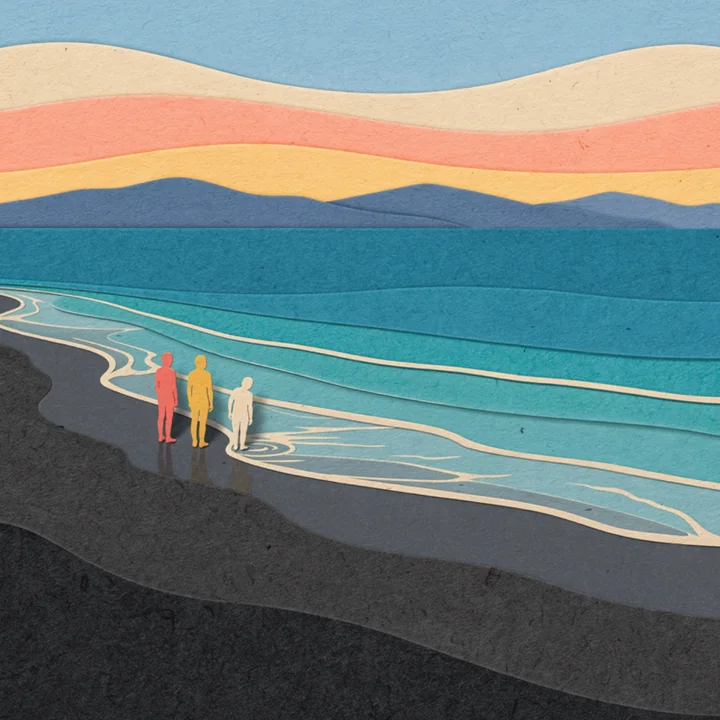
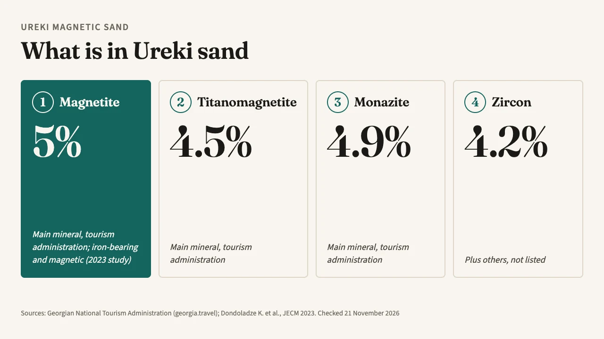
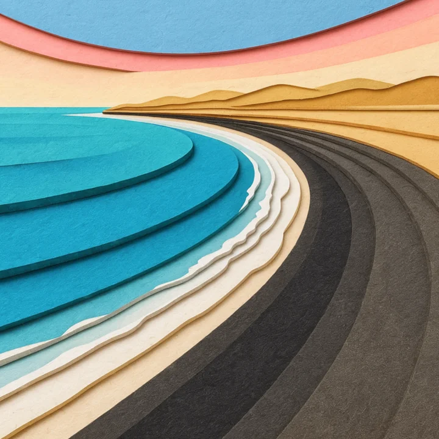
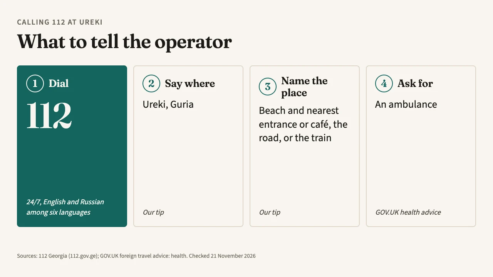

- Coastline of Ureki
- 1.5 km
- From Batumi
- 55 min by road
- From Tbilisi
- 4 h 30 min by road
- Summer
- June – mid-September
- Sunshine
- 1,800–1,820 hours (average)
- Emergency number
- 112
This page is part of the Georgia Travel Guide. Checked on 21 November 2026.
Where is Ureki, Georgia?
Ureki lies in the Guria region of Georgia, "in the south-western part of the Kolkheti lowland", according to the regional administration. The resort is bounded by the sea to the west, by the mountains to the east, and by the Supsa and Natane rivers to the north and south.

It "has officially existed as a resort since 1971", the same administration states. Wikipedia places it in Ozurgeti Municipality.
Its neighbour along the shore is Grigoleti. The Georgian National Tourism Administration describes the two together: their shore is five kilometres long. The neighbour belongs to Lanchkhuti Municipality, and the regional administration says its shore contains large amounts of magnetic iron particles. The same regional page also mentions Shekvetili.
Is Ureki sand really magnetic? What official sources say
Yes, according to both official sources we checked. The regional administration describes the fine "velvety" grains as having "magnetic properties".
The tourism administration goes further and gives the mineral make-up: "The main minerals of Ureki sand are magnetite (5%), titanomagnetite (4.5%), monazite (4.9%), zircon (4.2%) and others."
What is magnetite? A 2023 study describes it as "an iron-bearing mineral with magnetic properties". On another page, the tourism administration calls the shore of Ureki and Grigoleti "gray and black sand containing magnetite".
Neither administration gives the share of iron or titanium as elements, or says how strongly the grains react to a magnet. We do not guess at either.

Does the sand heal? What is claimed and what is proven
Official pages say it does; the one scientific study we found, from 2023, leaves that effect for a later stage. Here is who says what.
The tourism administration. Its page says the grains create "a natural magnetic field of low intensity", with a healing effect "especially for musculoskeletal and cardiovascular system conditions".
The regional administration. It states that the natural conditions here can be used to treat diseases of the cardiovascular system, of the peripheral organs and of the musculoskeletal organs, in adults and children. The page gives no clinical data and cites no study.
The 2023 study. Its authors, publishing in the journal JECM, ran X-ray fluorescence and X-ray phase analyses of samples from Ureki and Chakvi. They write that the rare make-up of the local samples is likely to shape their effect on health, which they plan to study at the next stage. The 2023 paper gives no results for that stage.
| What is said | Who says it | Checked |
|---|---|---|
| Has "magnetic properties" | Regional administration | 21 Nov 2026 |
| Four main minerals, with percentages | Georgian National Tourism Administration | 21 Nov 2026 |
| An effect "especially for musculoskeletal and cardiovascular system conditions" | Georgian National Tourism Administration | 21 Nov 2026 |
| Natural conditions "can be used to treat" heart, vessel and musculoskeletal diseases | Regional administration | 21 Nov 2026 |
| Effect on health: planned for the next stage | Authors of the 2023 JECM study | 21 Nov 2026 |

Sand baths: who should ask a doctor first
We found no official list of people who should avoid lying or burying themselves in warm sand. Nor did any official or scientific source we checked say whether the grains are toxic or safe.
Our tip. This is our advice, not an official rule:
- If you have a long-term illness or take medicine every day, ask your doctor first.
- Do not bury a small child in the middle of the day.
- If you feel unwell, move into the shade at once; if it does not pass, call the emergency number.
Another Georgian spa town with similar claims, Tskaltubo, has its own section: Who should not take radon baths.
Ureki beach: 1.5 km of grey and black sand
The resort's own coastline is 1.5 km long, by the tourism administration's figure. Counted together with Grigoleti, the dark shore runs for five kilometres, the same administration states.

The colour is official too: the administration calls it "gray and black". Not all of this coast looks like that. For a shore of pebbles, see Batumi beach and the sea; for a mix of pebbles and fine grains, see Anaklia beach: pebble and fine sand.
No official page we checked describes its facilities or how the water deepens, so we leave both out.
Can you swim at Ureki? Season, rescuers and children
Yes. It is a summer destination, and the tourism administration gives its summer as June to the middle of September.

What is known about safety in the water comes from one statement. In June 2025, at the start of the tourist period, the Minister of Internal Affairs said: "Rescuers in Adjara, Guria and Samegrelo will fully cover the area of the Black Sea coast". The statement does not name this place.
We found no official information on flags, currents or depths here, and no 2026 lifeguard schedule for it. Governments are silent on this too: neither the UK government (FCDO) nor the Government of Canada mentions swimming at the coast in its travel advice for the country.
Our tip.
- Go into the water only where you can see a rescue team on duty, even if the water looks calm.
- Stay out after a storm, and after drinking alcohol.
- Keep children within arm's reach.
- If someone gets into trouble in the water, call the emergency number.
More about swimming on this coast: Can you swim in the sea at Anaklia?
Ureki weather and the summer season
The regional administration calls the climate here "humid, subtropical" and gives an average of 1,800–1,820 hours of sunshine, without naming the period. Summer dates are in the section above.
Neither the tourism nor the regional administration gives water or summer air temperatures, so we give none. For the warm months across the country, see Georgia in summer: heat, UV and storms. Check the forecast on the day you travel.
Hot dark sand and the sun
The tourism administration writes that the sand "retains heat for a long time", listing this among its medical qualities. Our tip: do not walk barefoot on it in the middle of the day.
The sun is the other risk. The NHS warns that water reflects ultraviolet (UV) rays, increasing your exposure. Water also washes sunscreen off, and its cooling effect "can make you think you're not getting burned"; the NHS advises reapplying every 2 hours. It adds that sunlight reflected from sand and water is particularly dangerous for the eyes.

Heatstroke is "a medical emergency", say both the NHS and WHO. WHO advises drinking water regularly, "1 cup of water per hour and at least 2–3 litres per day"; that is its advice for hot weather in general. The NHS adds light-coloured, loose clothing and avoiding the sun between 11am and 3pm; it is a UK service, so these hours are not set for Georgia. Here, for suspected heatstroke, call 112.
Little ones need extra care. WHO advises wide-brimmed hats, sunglasses and sunscreen to protect children from the sun's rays.
Our tip. Wear beach shoes at midday. Bring your own shade, such as an umbrella. Keep the youngest and oldest in your group out of the sun in the middle of the day. More in Staying healthy in the summer heat.
How to get to Ureki from Tbilisi, Batumi and Kutaisi
By road, the tourism administration gives 4 h 30 min from Tbilisi to Ureki, 55 min from Batumi and 1 h 40 min from Kutaisi.

By marshrutka or bus. No official timetable or fares turned up for shared vans or buses to the coast. See What official advice says.
By car. Before you drive, read Georgia roads: what to expect.
From the airport. If you fly into western Georgia, see Arriving at Kutaisi airport.
Our tip. Plan the drive back for daylight, and carry water on summer days.
Is there a train to Ureki?
Services run to Ozurgeti, but the timetable does not show where they stop on the way. The general schedule of Georgian Railway lists only the end points of each route: the fast 854/853 Tbilisi–Ozurgeti every second day and the electric 613/614 Batumi–Ozurgeti daily.
Our tip. Before you travel, check on railway.ge or at the station where your service stops. Routes are in Train routes in Georgia.
Medical help near Ureki: 112 and doctors
In an emergency, dial 112 and ask for an ambulance, as the UK government's health advice puts it. The same advice warns that outside the capital, medical facilities are limited. No official list of hospitals for this stretch of coast or the towns around it turned up in our checks.
Calling 112 at Ureki
One number covers every emergency, and you can speak English. The service states that it takes calls 24/7 across the whole country, in Georgian, English, Azerbaijani, Armenian, Turkish and Russian.
Our tip. Start with "Ureki, Guria". Then say exactly where you are: the shore and the nearest entrance or café, the road, or the train. More in What to tell the operator.

Where to find a doctor
We found no official list of medical practices here, and 100doc.ge has no page for this resort or for Ozurgeti. The catalogue of clinics in Kobuleti on 100doc.ge covers a different town; it listed 8 clinics on 21 November 2026.
The UK government advises travel insurance that covers medical care and unexpected evacuation. It warns: "You or your travel insurer will need to pay for all treatment as it's provided."
Frequently asked questions
Can you swim in the Black Sea at Ureki?
Is Ureki sand really magnetic?
Is magnetic sand safe?
No official or scientific source we checked answers this. Our tip: if you have a long-term illness, check with your physician first.
Do the grains heal anything?
How far is Ureki from Tbilisi and Batumi?
Is there a train to Ureki?
Sources
- Georgian National Tourism Administration: Ureki ↑
- Guria regional administration: Ureki ↑
- Dondoladze K. et al. Magnetite and health effects. JECM, 2 March 2023. doi:10.52340/jecm.2023.01.19 ↑
- Ministry of Internal Affairs of Georgia: start of the 2025 season (21 June 2025) ↑
- 112 Georgia: languages and service ↑
- Wikipedia: Ureki ↑
- Georgian National Tourism Administration: The beaches ↑
- Guria regional administration: Grigoleti ↑
- GOV.UK travel advice: safety and security ↑
- Government of Canada: travel advice for Georgia (last updated 27 August 2026) ↑
- NHS: Sunscreen and sun safety (reviewed 24 March 2026) ↑
- NHS: Heat exhaustion and heatstroke (reviewed 28 May 2026) ↑
- WHO: Climate change, heat and health (31 July 2026) ↑
- Georgian Railway: traffic general schedule ↑
- GOV.UK travel advice: health ↑
This guide is general information, not medical advice.